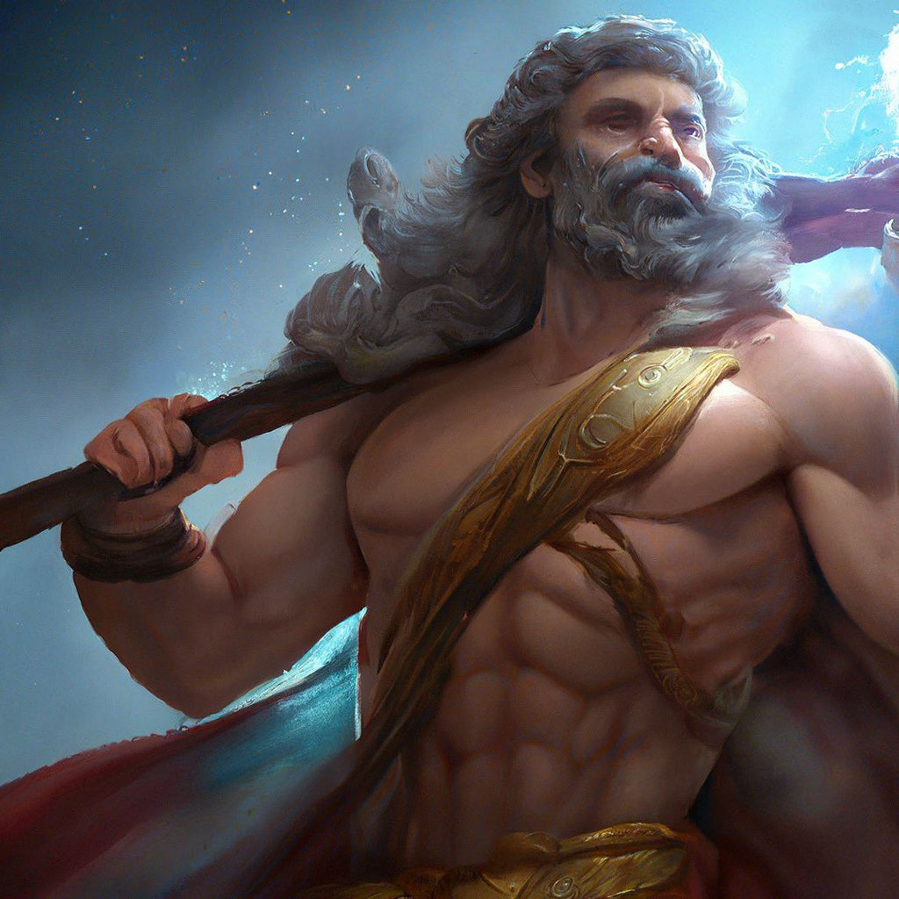
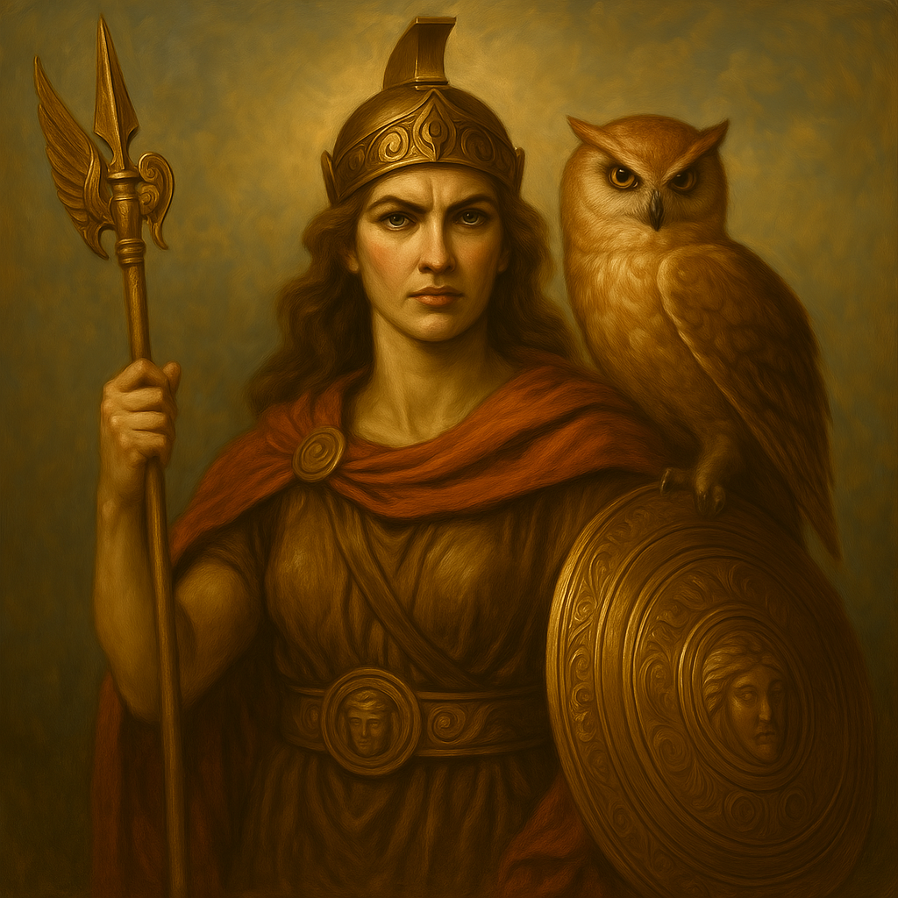
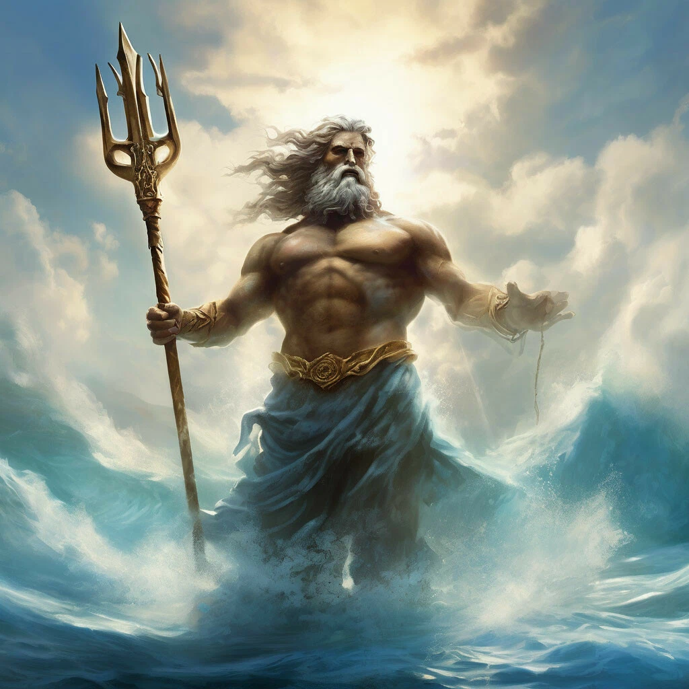
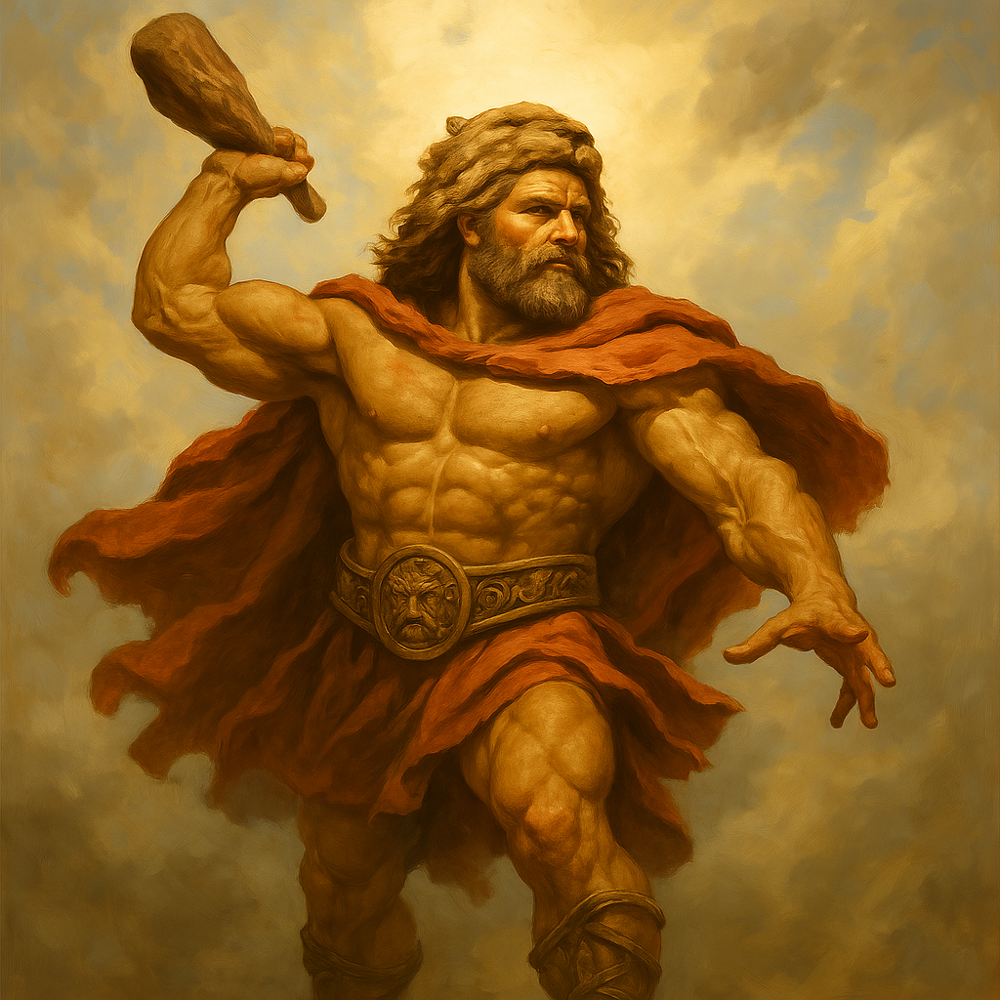
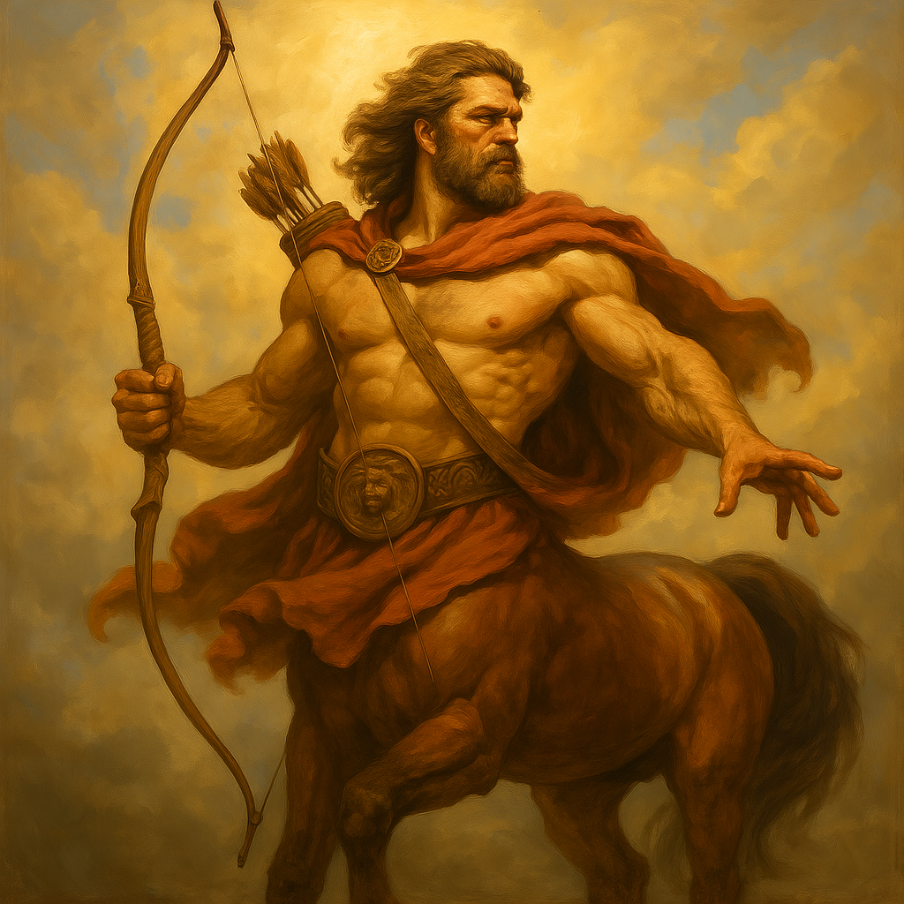
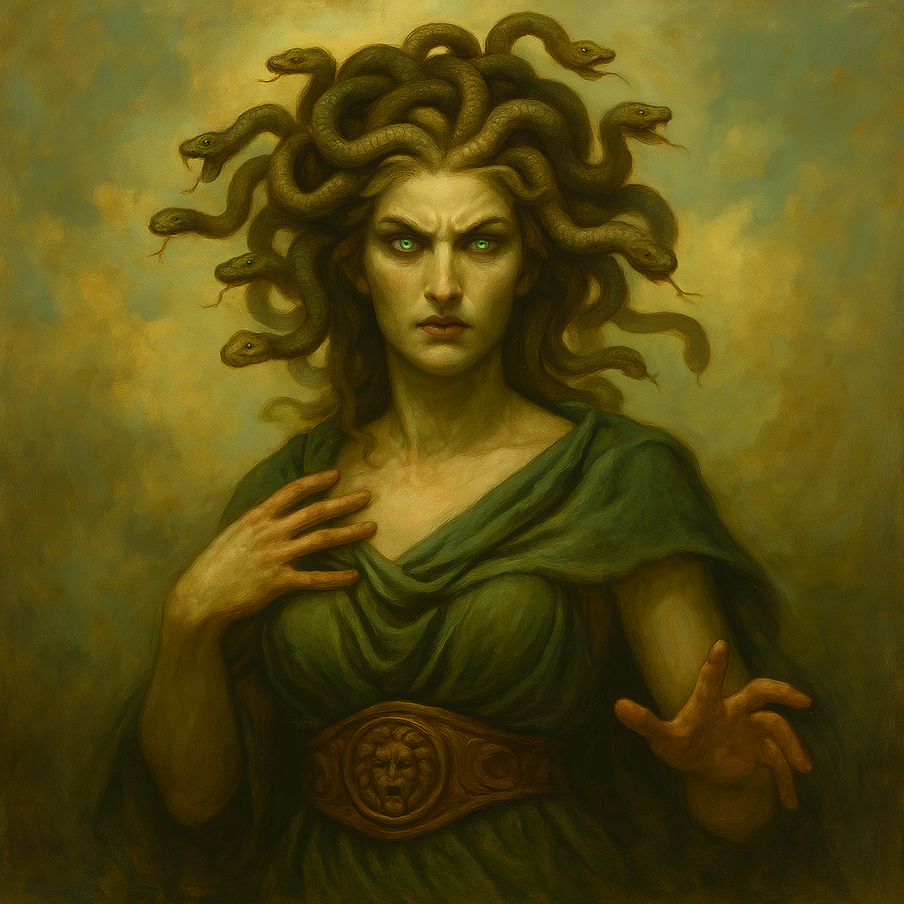

A mitologia grega era repleta de histórias fascinantes sobre deuses e heróis. Os deuses do olimpo governavam o mundo e tinham personalidades marcantes.
Zeus era o deus dos céus e do trovão. governando o olimpo com seu poderoso raio

Atena era deusa da sabedoria e da estratégia de guerra, conhecida por sua inteligência e justiça

Poseidon governava os oceanos e era conhecido por seu poderoso tridente

Além dos deuses, a mitologia grega conta com heróis e criaturas fascinantes.
Filho de Zeus, Hércules foi um dos maiores heróis gregos, conhecido por sua força e coragem.

Metade homem, metade cavalo, os centauros eram conhecidos por sua força e habilidades de combate.

Medusa era uma das górgonas, com cabelos de serpentes e um olhar que transformava em pedra.

Explore mais sobre a mitologia e descubra histórias incríveis!